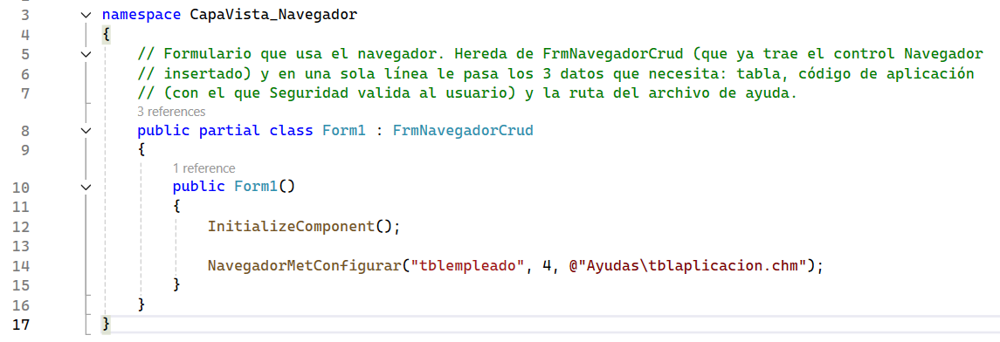

El Navegador es una cinta de botones que trabaja junto con un formulario base. El estudiante o programador utiliza ese formulario para obtener la cuadrícula y las operaciones CRUD sin construir cada mantenimiento desde cero.
¿Qué se observa en pantalla?
En la parte superior aparece la cinta del Navegador. Debajo se muestran el formulario dinámico y la cuadrícula cuando el usuario ejecuta una operación como Ingresar, Consultar o Refrescar.
Ubicación de la vista general del componente
Vista en ejecución → formulario Form1 → componente FrmNavegadorCrud

¿Cómo se utiliza desde el formulario?
El formulario del mantenimiento hereda de FrmNavegadorCrud. De esta manera recibe el control y la lógica CRUD que ya están preparados.
- Declarar el formulario como una clase derivada de
FrmNavegadorCrud. - Ejecutar
InitializeComponent()dentro del constructor. - Configurar la tabla, el código de aplicación y la ruta de ayuda.
Ubicación de la configuración del formulario
Proyecto de ejecución → carpeta Ejecucion_Navegador → clase Form1

¿Dónde se encuentra el control?
El formulario base ya crea una instancia de Navegador y la agrega a sus controles. Por esta razón, agregar otro Navegador manualmente produciría una cinta duplicada.